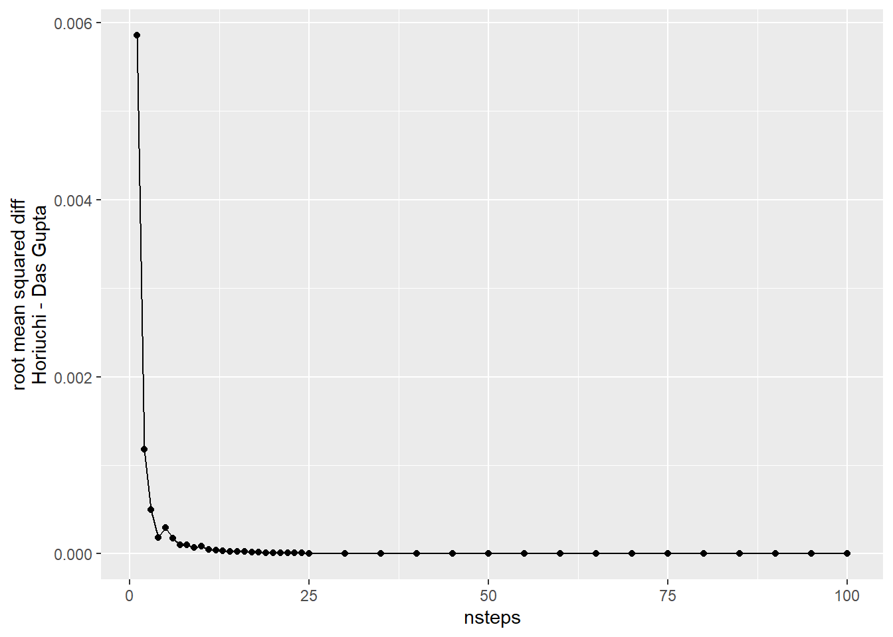
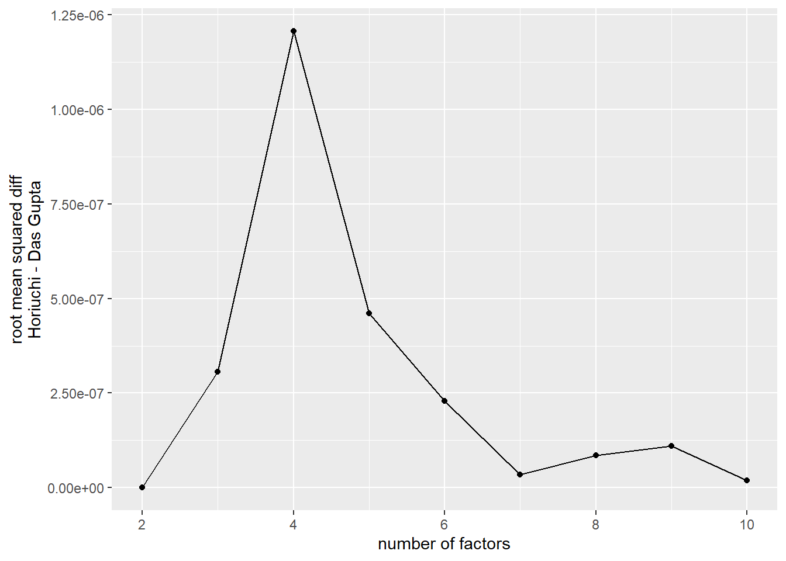
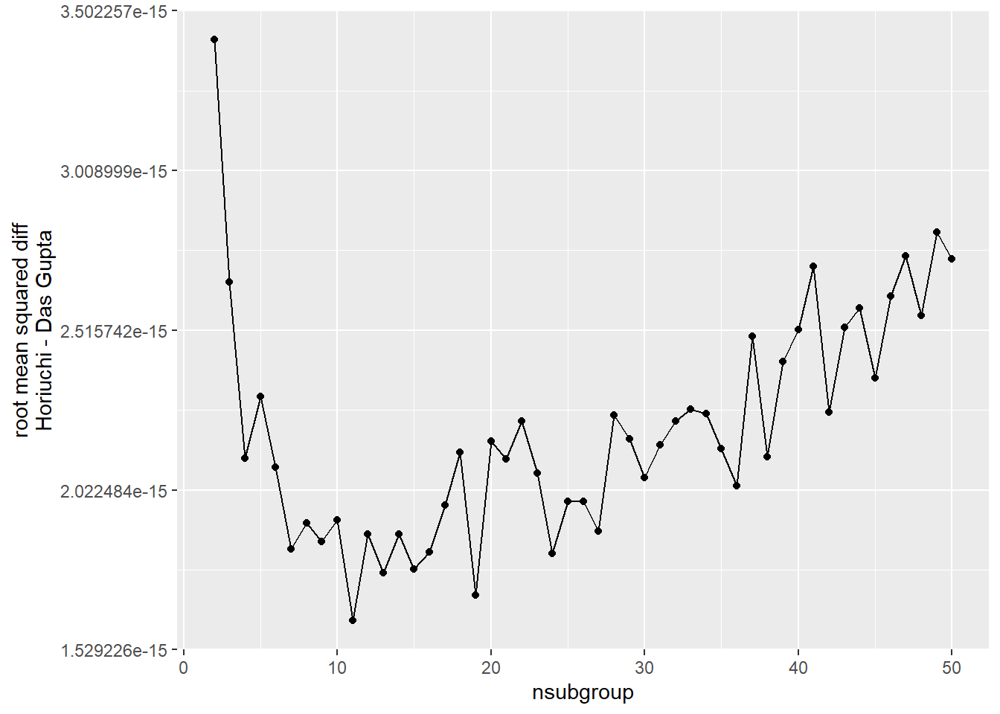

This documents provides some comparisons of the Horiuchi and Das Gupta methods of decomposition, as implemented in {{DemoDecomp}} and {{DasGuptR}} respectively.
First, it shows for a simple decomposition of a rate as the product of four factors, that the two approaches converge as the number of integration steps for the Horiuchi method increases. It then demonstrates that the number of factors and the numbers of subgroups create little divergence between the two methods, nor does the size of the crude rate difference being decomposed.
Finally, it provides a discussion of subgroup specific contributions as calculated via the two methods.
1. Setup and functions
Code
library(tidyverse)library(DemoDecomp)library(DasGuptR)## Data sim --- # Two populations, nK factors, nI subgroups,# difference in crude rates should be ~0.05simdata <-function(nK =3, nI =5, crude_delta =0.05) {# subgroup size: wA =rgamma(nI, shape =2, scale =1000)# subgroup prop: pA = wA /sum(wA)# have f1 be a baseline rate: fA1 =rbeta(nI, shape1 =3, shape2 =50) # make f2..k multipliers of relative risk, ~1if(nK >1) { fA2k =rlnorm(nI * (nK -1), meanlog =0, sdlog =0.25) fA =c(fA1, fA2k) } else { fA = fA1 }# pop B is initially pop A: pB = pA fB = fA# add some shift: pB = pA +rnorm(nI, mean =0, sd =0.02)# needs to be bounded pB =pmax(pB, 0.001) /sum(pmax(pB, 0.001))# F1 will increase by crude_delta on avg. # F2..k are es fB[1:nI] <-pmax( fB[1:nI] + crude_delta +rnorm(nI, mean =0, sd = crude_delta*.1), .0001 )if (nK >1) { fB[(nI+1):length(fB)] <- fB[(nI+1):length(fB)] *rlnorm(nI * (nK -1), meanlog =0, sdlog =0.05) }return(list(popA =c(pA, fA),popB =c(pB, fB),nK = nK,nI = nI ))}## Das Gupta decomposition --- getDG <-function(sdata){require(DasGuptR)# dgnpop needs a data frame,# and population indicator etc. dfdg <-cbind(pop =rep(letters[1:2],e=sdata[[4]]),sgroup =rep(1:sdata[[4]],2),rbind(as.data.frame(matrix(sdata[[1]],ncol=sdata[[3]]+1)),as.data.frame(matrix(sdata[[2]],ncol=sdata[[3]]+1)) ) )## decomp:if(sdata[[4]]==1){# subgroup size not included if only 1 subgroup flist =names(dfdg)[-c(1:3)] } else{ flist =names(dfdg)[-c(1:2)] } dg_res =dg_table(dgnpop(dfdg,pop ="pop", factors = flist,id_vars ="sgroup",quietly =FALSE,ratefunction =paste0("sum(",paste0(flist,collapse="*"),")") ))$diffreturn(# remove the crude diffs: dg_res[-length(dg_res)] )}## Horiuchi decomposition --- getH <-function(sdata, nstep=100){require(DemoDecomp)# horiuchi just wants vectors pop1 = sdata[[1]] pop2 = sdata[[2]]# rate functionif(sdata[[4]]==1){ aggrfunc =function(x){ x <-matrix(x, ncol = sdata[[3]])sum(matrixStats::rowProds(x)) }# decomposition: hres <-horiuchi(func = aggrfunc,pars1 = pop1[-1],pars2 = pop2[-1],N = nstep) hres <-matrix(hres, ncol = sdata[[3]]) } else { aggrfunc =function(x){ x <-matrix(x, ncol = sdata[[3]]+1)sum(matrixStats::rowProds(x)) }# decomposition: hres <-horiuchi(func = aggrfunc,pars1 = pop1,pars2 = pop2,N = nstep) hres <-matrix(hres, ncol = sdata[[3]]+1) }return(colSums(hres) )}
2. Number of integration steps
For this example, we set the number of factors = 4, and the number of subgroups = 1. The rate is a simple product of the 4 factors, where the crude rate difference is set to approximately .05 (rates are expressed as proportions).
We vary the number of integration steps in Horiuchi (the N argument to horiuchi() function), from 1 to 100. For each number of integration steps, we sim 50 datasets and perform decomposition using both DasGuptR::dgnpop() and DemoDecomp::horiuchi().
Code
# set up conditions and n simsres1 <-expand_grid(nsteps =c(1:25,seq(30,100,5)),sims =1:50 )# for each sim, get decomposition effects from # both DG and H methodsres1$data <- res1$DG <- res1$H <-NAfor(i in1:nrow(res1)){ res1$data[i] <-list(simdata(nK=4,nI=1)) res1$DG[i] <-list(getDG(res1$data[[i]])) res1$H[i] <-list(getH(res1$data[[i]], res1$nsteps[[i]]))}res1 <- res1 |>unnest(c(DG,H))save(res1, file ="dgh_res1.rdata")
Code
load(url("https://dasguptr.github.io/dgh_res1.rdata"))cbind(nsteps =c(1:25,seq(30,100,5)),rmse =tapply((res1$H - res1$DG)^2, res1$nsteps, \(x) sqrt(mean(x)) ) ) |>ggplot(aes(x=nsteps, y=rmse)) +geom_point()+geom_line()+labs(y ="root mean squared diff\nHoriuchi - Das Gupta")

3. Number of factors
For Das Gupta’s approach, increasing the number of factors involves increased computation time, as it means evaluating the rate at many more combinations of factors.
Below, we vary the number of factors from 1 to 10, again with just a single subgroup, and a crude rate difference of ~.05.
In each case, the rate is calculated as a simple product of all factors, and we use 100 integration steps for Horiuchi.
For each number of factors, we simulate just 15 datasets.
Code
# set up conditions and n simsres2 <-expand_grid(nf =c(2:10),sims =1:15 )# for each sim, get decomposition effects from # both DG and H methodsres2$data <- res2$DG <- res2$H <-NAfor(i in1:nrow(res2)){ res2$data[i] <-list(simdata(nK=res2$nf[i], nI=1)) res2$DG[i] <-list(getDG(res2$data[[i]])) res2$H[i] <-list(getH(res2$data[[i]], nstep =100))}res2 <- res2 |>unnest(c(DG,H))save(res2, file ="dgh_res2.rdata")
Code
load(url("https://dasguptr.github.io/dgh_res2.rdata"))cbind(nf =c(2:10),rmse =tapply((res2$H - res2$DG)^2, res2$nf, \(x) sqrt(mean(x)) ) ) |>ggplot(aes(x=nf, y=rmse)) +geom_point()+geom_line()+labs(y ="root mean squared diff\nHoriuchi - Das Gupta",x ="number of factors")

4. Number of subgroups:
Finally, we vary the number of subgroups from 2 to 50. In each case, the rate is calculated as the product of 2 factors (subgroups relative sizes, and a subgroup specific value such as a subgroup specific rate), and we use 100 integration steps for Horiuchi.
For each number of subgroups, we simulate 50 datasets.
Here we are only comparing the divergence in the marginal effects of each factor (i.e., the sum of the subgroup specific contributions).
load(url("https://dasguptr.github.io/dgh_res3.rdata"))cbind(nsubgroup =c(2:50),rmse =tapply((res3$H - res3$DG)^2, res3$nsubgroup, \(x) sqrt(mean(x)) ) ) |>ggplot(aes(x=nsubgroup, y=rmse)) +geom_point()+geom_line()+labs(y ="root mean squared diff\nHoriuchi - Das Gupta")

5. Crude rate difference
Note that these differences will grow ever so slightly the bigger the crude-rate differences are, but these are always minimal (<1e-6)
Code
# set up conditions and n simsres4 <-expand_grid(cdiff =seq(0,1,length.out=20),sims =1:50 )# for each sim, get decomposition effects from # both DG and H methodsres4$data <- res4$DG <- res4$H <-NAfor(i in1:nrow(res4)){ res4$data[i] <-list(simdata(nK=4,nI=1,crude_delta=res4$cdiff[i])) res4$DG[i] <-list(getDG(res4$data[[i]])) res4$H[i] <-list(getH(res4$data[[i]], 100))}res4 <- res4 |>unnest(c(DG,H))save(res4, file="dgh_res4.rdata")
6. subgroup specific effects and sum-to-1 constraints
Here we demonstrate how it is possible to reparameterize Horiuchi by dropping any given subgroup proportion to obtain different subgroup specific contributions (all relative to the omitted group), but preserve the overall marginal totals. We also show that this is not possible in Das Gupta’s method - it is possible to omit a subgroup proportion but this makes no change to the decomposition process.
For this demonstration, we will use Das Gupta’s Example 5.1, which contains, for 2 populations, a set of 13 age groups, the age-specific rates, and their relative size as a percentage.
A quick plot of the age group sizes shows that, e.g.: the 15-19 group makes up a bigger proportion of the 1st population than the 2nd; this is reversed in the 25-29 group; and the 60-64 group makes up a similar proportion in both populations:
Performing decomposition with DemoDecomp::horiuchi() requires providing the values as vectors of length K*I (where K is number of factors, I is number of subgroups):
# population weights and rates as vectors for horiuchi()pop1 =c(df$size[df$pop==1970],df$rate[df$pop==1970])pop2 =c(df$size[df$pop==1985],df$rate[df$pop==1985])# this is the rate function for decomposition using full vector: aggrfunc_full <-function(x){ ws = x[1:13] rs = x[14:26]sum(ws*rs)}hres0 <-horiuchi(func = aggrfunc_full,pars1 = pop1,pars2 = pop2,N =100)
The overall factor contributions (age-proportions and age-specific rates) are obtained by summing over the subgroups:
sum(hres0[1:13]);sum(hres0[14:26])
[1] 1.2269
[1] 1.7403
We can see that these are equivalent to what we get out of DasGuptR::dgnpop() (the diff column of the table below):
To get subgroup specific effects from dgnpop(), we need to set agg = FALSE as well as removing the aggregating sum() from the rate function.
dgres0 <-dgnpop(df, pop="pop", factors=c("size","rate"),id_vars ="age_group",ratefunction ="size*rate", agg=FALSE) # to get these into the same format as horiuchi: dgres0 <- dgres0[,-3] |>pivot_wider(names_from=factor,values_from=rate) |>pivot_wider(names_from=pop,values_from=c(size,rate)) |>transmute(size = size_1985-size_1970,rate = rate_1985-rate_1970 )
Just as with Horiuchi, the overall factor contributions can be retrieved by summing over the subgroups:
colSums(dgres0)
size rate
1.2269 1.7403
And the subgroup specific values are the same for the two methods:
Because subgroup proportions must sum to 1, we can omit a group from the vector, and provide this as part of the function.
For horiuchi(), we need to adjust the function to insert the missing value in the appropriate place in the vector:
aggrfunc_sub <-function(x, idx){# put back in the missing group proportion, as 1-sum(others):# note that x is now of length (I*K)-1. ws =append(x[1:12], 1-sum(x[1:12]), after = idx-1) rs = x[13:25]sum(ws*rs)}
We can attempt the same using Das Gupta’s approach, removing a sub-group proportion and including the sum to 1 constraint within the calculation of the rate:
To demonstrate where these two methods diverge, consider a scenario in which there are two populations, 20 subgroups, and 3 factors (the first of these are relative sizes of subgroups).
The population rate is calculated as \(R = \sum_i a_i \cdot b_i \cdot c_i\)
However, when we move to a rate that involves a cross-group dependency, such as \(R = \sum_i a_i \cdot \frac{b_i}{\sum b} \cdot c_i\).
Here, because \(b\) is not constrained to sum to 1 (as \(a\) is, because \(a\) is the subgroup proportions), this means that contribution of \(b_i\) is dependent on the values that other groups have for \(b\).